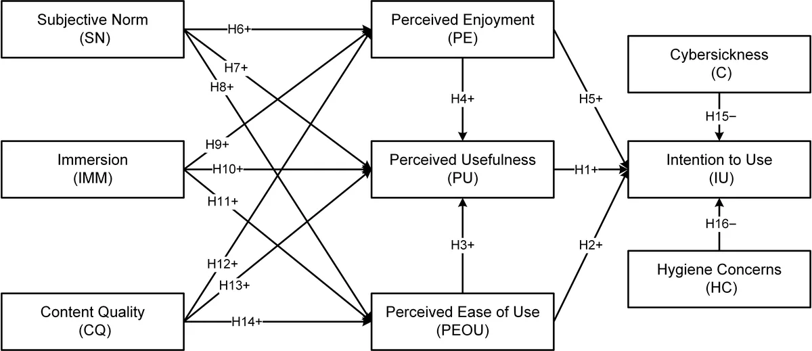
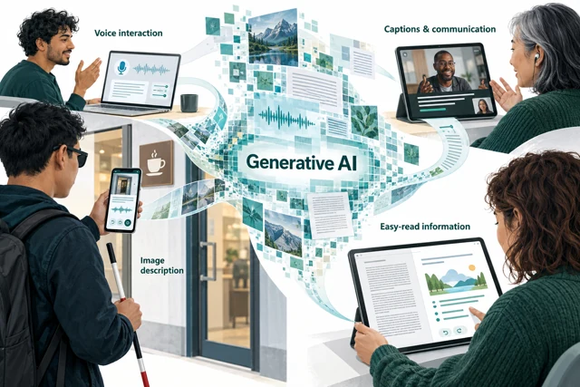
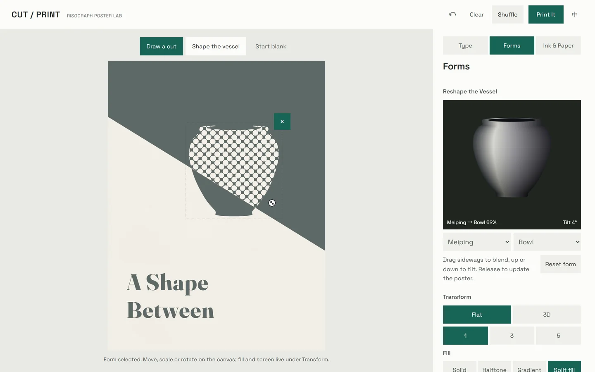
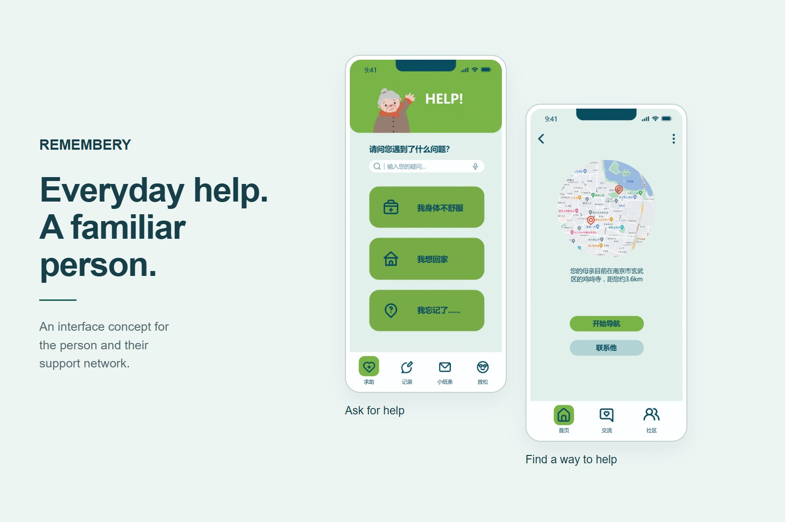
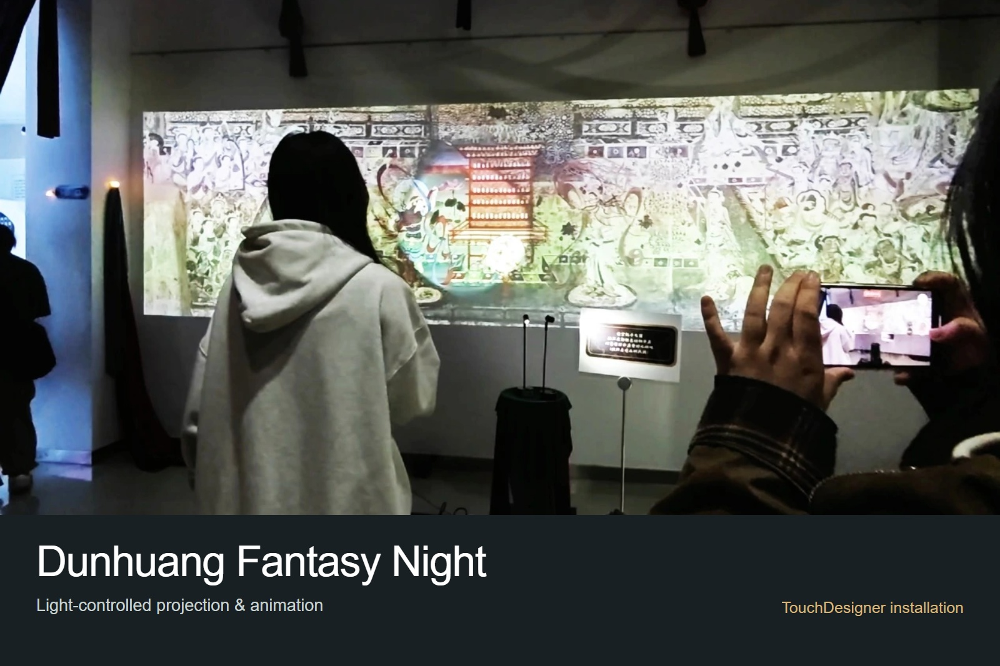
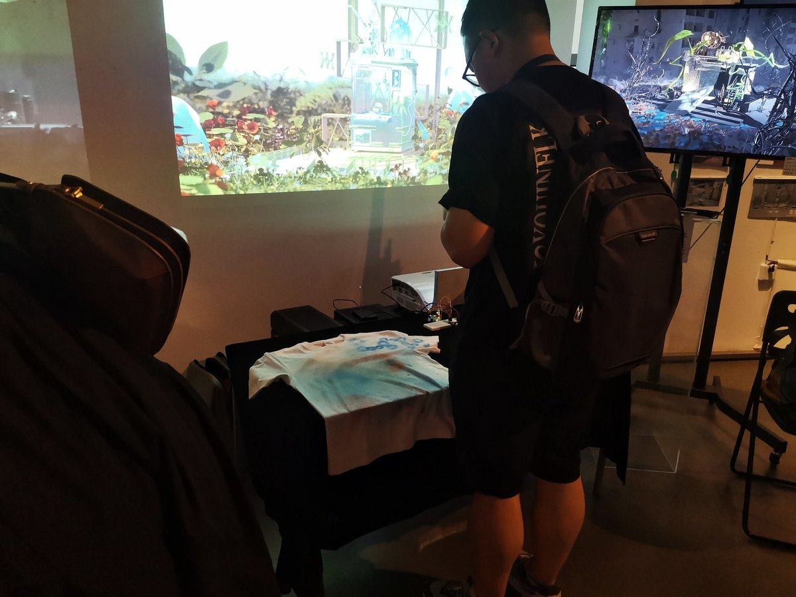

Heritage · 2025 · Co-first author
VR Acceptance in Cultural Heritage
A mixed-methods study combining 566 survey responses with 20 semi-structured interviews.

Design researcher · Human–computer interaction
I study how people understand and use AI and immersive technologies. I am particularly interested in accessibility and the role people have in shaping their interactions with these systems.
I recently completed my M.F.A. in Design Science at Jiangnan University, supervised by Prof. Feng Wang. My work combines empirical research with interface design and interactive prototyping.
I am applying for PhD opportunities starting in 2027.

Heritage · 2025 · Co-first author
A mixed-methods study combining 566 survey responses with 20 semi-structured interviews.

Master's thesis · 2026
A Unity / Vuforia prototype and a 388-response study of AR experiences for traditional craft.

Current work · Manuscript in preparation
A systematic review of 240 papers examining applications, research evidence, disabled people’s participation, and responsibility for generated outputs.
Interface concepts, web applications and physical installations.

Independent web application
An interactive poster editor: draw a cut, reshape a vessel and explore two-ink compositions.
Try CUT / PRINT
Interface design concept
Everyday help, family contact and permission-aware sharing in a dementia-support interface concept.

Interactive installation
A handheld light reveals a moving mural through an infrared-controlled TouchDesigner installation.

Interactive installation
An Arduino and TouchDesigner installation connecting sensor input to real-time visuals.